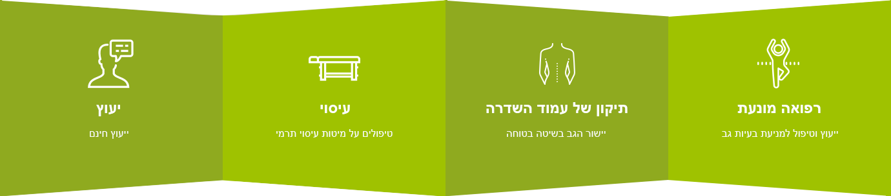
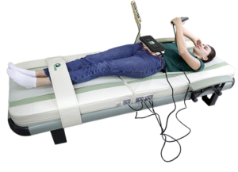
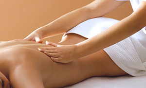
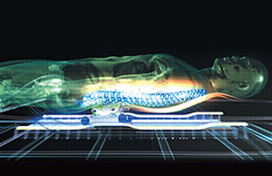
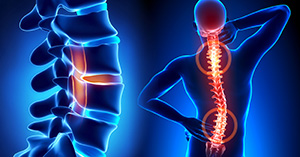
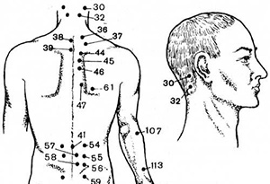
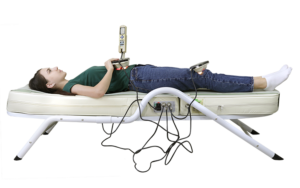

«מרכז לבריאות עמוד השדרה «אטלנט |
המרכז שלנו מספק שירותי טיפול בעמוד השדרה ללא ניתוח במיטות עיסוי תרמי |
|
העיסוי על מיטת עיסוי מתבצע באמצעות גלילי נפריט, ועוצמתו מותאמת על ידי משקלו של המטופל עצמו. גלילי נפרית מבצעים לישה אורכית עמוקה על אזורים מקבילים לחוליות, וקרני אינפרא אדום מספקות אפקט חימום נוסף. גלילי העיסוי נעים אך ורק על פני אזורים ליד חולייתיים - מגע ישיר עם עמוד השדרה אינו נכלל על מנת למנוע פציעה. עקרון פעולה זו מאפשר שימוש במיטות טיפול לאנשים הסובלים מעקמת, אוסטאוכונדרוזיס, בלטים ופריצות דיסק ומחלות אחרות של עמוד השדרה. מתי מומלץ להשתמש במיטת עיסוי?מיטת עיסוי היא יעילה מאוד עבור בעיות עם מערכת השלד והשרירים: אוסטאוכונדרוזיס, עקמת, צניחת דיסקים בין-חולייתיים, הפרה של יציבה. אבל יש גם התוויות נגד: לא ניתן להשתמש במיטת עיסוי לאנשים עם פציעות בעמוד השדרה, אוסטאופורוזיס ואוסטאומיאליטיס חמורים .להם מיטת עיסוי אסורה! כמו כן עבור כל עיסוי, קיימות התוויות נגד סטנדרטיות: דימום, חום, שלב אקוטי של כל מחלה, שחפת, התקף לב, הריון (המחצית השנייה). אבל לסובלים מדיסטוניה צמחית-וסקולרית, מיגרנה, ברונכיטיס, אסטמה, יתר לחץ דם, מחלות כלי דם של המוח, מיטת עיסוי מומלצת מאוד. אנשים שאינם מתלוננים על בריאותם, מיטת עיסוי תעזור להתמודד עם לחץ פיזי ונפשי, להגביר את המערכת החסינות ואפילו לרדת במשקל. |
 | ||
חמש שיטות טיפול – במכשיר אחדהעיסוי התרמי מתבצע על ידי מיטת עיסוי שמשלבת בתוכה חמש שיטות טיפול: עיסוי, חום אינפרא אדום טבעי, כירופרקטיקה, אקופרסורה (עיסוי נקודתי) ומוקסה-תרפיה. |
|||
עיסוי |
|||
|
שיטת טיפול המתאפיינת בהשפעה מכנית על המעטה החיצוני של הגוף. פעולות העיסוי במכשיר הינן בעלות אופי פיזיותרפי ומתמקדות באזורים שונים בגוף במטרה להוביל לשיפורים בריאותיים כגון: האצה של הסביבה הנוזלית בגוף, חידוש רקמות, סילוק רעלים וכד'. בדרך זו, העיסוי תורם להפחתת דלקות וכאבים, שיפור בטווח התנועה של מפרקים, שיפור בגמישותם של שרירים וכד'. בנוסף, העיסוי תורם לשינה טובה יותר, הירגעות ויכול לשמש גם כטיפול בלחץ נפשי והשלכותיו. |
 | ||
חום אינפרא-אדום |
|||
|
כל היצורים החיים, כולל בני האדם, מקרינים חום אינפרא אדום באורך גל שנע בטווח של 6-18 מיקרון. גלים מסוג זה מכונים גלים ביו-גנטיים או גלי החיים. לכן, גוף האדם מקבל חום מסוג זה כטבעי עבורו ויש לו השפעה ייחודית על הגוף. משטחי הפחמן (קרבון) ואבני הג'ייד (נפריט) במכשיר הם המקור לגלי החיים. גלים אלו חודרים לעומק הגוף (עומק של 7-10 ס"מ) וברמת התאים מחממים ביעילות את הרקמות, השרירים, הפרקים, האיברים ושאר הסביבה הפנימית בגוף. כך אנו משיבים לגוף את אותה אנרגיה שדעכה עם השנים ומעניקים לו את היכולת להסדיר את קצב התהליכים הביולוגיים. זרימת הדם והסביבה הנוזלית בגוף מואצות, חמצן מובל בצורה טובה יותר לתאים, חילוף החומרים משתפר ומתייעל, תהליך התחדשות התאים מתחזק ומופעלת שרשרת ארוכה של תהליכים חיוניים והכרחיים לגוף האדם. כך הגוף משקם את ההרמוניה הטבעית שלו בכוחות עצמו. |
 | ||
כירופרקטיקה |
|||
|
שיטת טיפול המונעת הפרעות במערכת העצבית שריר-שלד שעלולות להשפיע על הבריאות הכללית. ייחודיות השיטה היא בהסרת הלחץ מעצבים בעמוד השדרה ובנרמול המתרחש במעבר האימפולסים מחוט השדרה לאברי הגוף ותאיו. כך מסולקים שורשי המחלה ולא רק תסמיניה. באופן כזה, מתעוררת ומתאפשרת היכולת של הגוף לשיקום עצמי. ראשי העיסוי במכשיר נעים לאורך צדי עמוד השדרה, בהתאם לעיקוליו הפיזיולוגיים ויוצרים מתיחה עדינה של עמוד השדרה. עיסוי מסוג זה בשילוב חום אינפרא אדום ייחודי שמוקרן מאבני הג'ייד, מרפים את השרירים ובכך מאפשרים את תזוזת החוליות למקומן. בדרך זו, משתחררים העצבים המעוכים ומוסר הלחץ מקצוות העצבים. שיטת טיפול זו משקמת את בריאות עמוד השדרה ומשיבה לו את צורתו הטבעית וגמישותו. כפועל יוצא מכך, משתקמת בריאותו הכללית של האדם. |
 | ||
אקופרסורה (עיסוי נקודתי) |
|||
|
שיטת טיפול המבוססת על הפעלת לחץ ממושכת על נקודות ביו-אקטיביות בגוף במטרה לשחרר שרירים תפוסים, עצבים לחוצים ולפתוח ערוצי אנרגיה. גירוי נקודות אלה מאפשר לגוף האדם לחזור לקצב חיים תקין. ראשי העיסוי במכשיר, על ידי גירוי נקודתי שכזה, מפעילים תגובת שרשרת של תהליכים חיוניים והכרחיים לפעילות תקינה של הגוף, מורידים לחץ עצבי ושרירי, מקלים על כאבים, משחררים "חסימות אנרגטיות" ובהדרגה מחדשים את מאגרי האנרגיה בגוף. |
 | ||
מוקסה-תרפיה |
|||
|
שיטת טיפול המתאפיינת בהחדרת חום ישירה אל תוך נקודות ביו-אקטיביות בגוף שמיועדת לטפל במחלות שונות ותורמת לחיזוק הגוף ושיכוך כאב. מוקסה תרפיה מרחיבה את כלי הדם, משפרת את זרימת הדם ואת חילוף החומרים בגוף, מעוררת תגובות פיזיולוגיות וביו-כימיות אשר מחזקות בין היתר את מערכת החיסון ותורמות להחייאה והתפתחות של תאים בריאים בגוף. אבני הג'ייד (נפריט) מתחממות ופולטות חום אינפרא אדום טבעי שזהה בסוגו לחום גוף האדם. חום זה חודר לעומק הגוף בעת עצירתן של גלגלות העיסוי בנקודות ביו-אקטיביות לאורך הגב והבטן ובמידת הצורך ניתן לחקות את ההשפעה של המוקסה על ידי העלאת הטמפרטורה של אבני הג'ייד לטמפרטורה מקסימאלית. |
 | ||
כבר לאחר הטיפול הראשון תרגישו איך הגופכם משתנה!
למיטות עיסוי יש השפעה פיזיותרפית על כל הגוף:
|
|
ההשפעה של מיטת עיסוי אל מחוסנים מ-COVID-19תופעות הלוואי השכיחות ביותר לאחר חיסון Covid-19 (חיסון Pfizer/BioNTech) הן חולשה, כאבי גוף, צמרמורות. אנשים רבים שחוסנו מתלוננים שהם מרגישים תסמינים לא נעימים אלה תוך 1-3 ימים לאחר החיסון. וכל ההשפעות השליליות האלו נעלמות לאחר 1-2 טיפולים במיטת עיסוי! חימום, עיסוי, גריה זרימת הדם והלימפה, מטבוליזם ומנגנוני טיהור עצמי אינם משאירים סימן לאי נוחות, ומאפשרים לך לחזור במהירות לחיי יום יום בריאים. קרא מה המבקרים שלנו מספרים! |
חשוב לדעת! |
||||
|
כל פעילות טובה דורשת תדירות, בין אם זה פעילות ספורטיבי, לימוד משהו חדש או שימוש במיטת עיסוי. הטיפולים במיטה צריכים להתבצע כל יום 1 - 3 פעמים של 30 – 60 דקות, עם הפסקות של לפחות 4 שעות ביניהם. להתחיל צריך בזהירות, עם טיפול אחד ביום, במידה וקיימות מחלות קשות יש להתייעץ עם הרופא! לפעמים קורה כי אדם לקח בחשבון את כל העצות של הרופאים לגבי השימוש במיטת עיסוי, אבל הטיפולים הראשונים גורמים להידרדרות - מחלות כרוניות מחמירות ומופיעים כאבים. אל תיבהלו: זהו מה שמכונה "משבר הריפוי". זה קורה במידה והבריאות מוזנחת מאוד. כאשר עמוד השדרה חוזר למצב הטבעי שלו, והאזורים הכואבים מתחילים להתאושש, זה הופך להיות טלטול חזק לגוף, מתח חיובי. אם אתם תתמודדו עם הסבל מספר טיפולים ותמשיכו להשתמש במיטת עיסוי, הכאב והבעיות יעלמו, והמצב ישתפר משמעותית. |
||||
שאלות נפוצות |
||||
40 דקות על מיטת עיסוי זה כמו 40 דקות של אימון בחדר הכושר! אם לכוון את הגלילים לטמפרטורה של 60 מעלות צלזיוס, האדם יקום מהמיטה רטוב, כאילו יצא מהסאונה. כמובן קילוגרמים מיותרים נשרפים באותו הזמן. עם זאת, לא כדאי לסמוך על אפקט ירידה במשקל משמעותי רק באמצעות מיטת עיסוי. אוסטאוכונדרוזיס היא אחת המחלות שבהן מיטת עיסוי יעילה במיוחד. זוהי הפתולוגיה של דיסקים בין-חולייתיים. בזמן מתיחה ויישור עמוד השדרה, מיטת עיסוי עוזרת להילחם באוסטאוכונדרוזיס, וגם בבעיות דומות אחרות – עקמת, נוירלגיה, לומבגו וליקוי יציבה. היפרטונוס של השרירים הוא סימפטום נפוץ מאוד במחלות של מערכת העצבים. מיטת עיסוי היא שיטה מצוינת להילחם בהם. טיפול בהיפרטונוס של השרירים מתבצעה על מיטות עיסוי באמצעות גם חימום, וגם עיסוי מכני של הגלילים. כל זה מרגיע את השרירים, משחרר את המתח שלהם, הופך אותם להיות רכים וגמישים יותר. בתוך הדיסק הבין חולייתי נמצא גרעין ג'לי, אשר מוקף בטבעת של רקמת חיבור. בלט או פריצת דיסק מתרחש אם טבעת זו נקרעת והליבה הג'לית בולטת במקום הקרע. יחד עם זה, החוליות זזות ממקומן מה שגורם לדחיסה של שורשי העצבים וכלי הדם ולהופעת כאבי גב קשים. במהלך שחזור חוליות למקומן הרגיל, מיטת עיסוי הופכת לכלי רב עוצמה להילחם בפריצה עצמה והתוצאות הלא נעימות שלה. הגלילים עוברים על הגוף ומתוחים את עמוד השדרה בעדינות. זה מטפל בעקירה של החוליות, צביטה ודחיסה של קצות העצבים ומחייה את מערכת העצבים בכללותה. הסחוסים והדיסקים הבין-חולייתיים משוחזרים, הסימטריה של עצמות האגן והכתף חוזרת גם. חימום אינפרא אדום מדכא דלקות, מגרה את זרימת הדם ואת חילוף החומרים.
|
{kind=link}
לקוחות מספרים |
||
|
תודות לסדרת הטיפולים אצלכם, אני מרגישה הקלה ושיפור משמעותי במצבי. הגעתי אליכם עם גב תפוס ויכולת תזוזה מינימאלית ואחרי מספר ימים של טיפולים, אני מסוגלת לחזור לתפקוד! יעל ב. |
||
|
הגעתי למרכז בריאות עמוד השדרה עם בעיה של סוכר, כאבי רגליים וכאבי צוואר, לאחר ששום טיפול לא עזר לי ומצבי התדרדר. מהטיפולים הראשונים הרגשתי טוב יותר. הרופא הוריד לי את מינון האינסולין לסוכר וכאבי הרגליים והצוואר פחתו מאוד. אין לי מילים, מרגיש מצויין. ניסים פ. |
||
|
הגעתי למרכז בעקבות המלצה של חברים עקב בעיות גב חמורות עם הקרנות לרגליים וכאבי צוואר עם הקרנות לידיים. הייתי מאוד סקפטי אך לאחר 25 טיפולים מצבי השתפר פלאים, פחתו הכאבים ופסקו ההקרנות, הפסקתי לצרוך משככי כאבים והרופא היה מופתע מהשיפור הדרסטי בתפקודי. יוסי מ. |
||
|
תוצאה בלתי צפויה לחלוטין! למחרת בבוקר לאחר שקיבלתי את המנה השנייה של החיסון מ-Covid-19, הרגשתי לא טוב - הייתה לי חולשה קשה, כאבי גוף, צמרמורות. בקושי קמתי מהמיטה כדי להתרחץ ולשתות מים. לא היה לי כוח לעשות שום דבר. נשכבתי על מיטת העיסוי (למזלי יש לי בבית) ועברתי את תוכנית עיסוי מחמם הסטנדרטית. אחרי 40 דקות קמתי - כאילו נולדתי מחדש: מלא כוח ואנרגיה! לא נשאר זכר לחולשה וצמרמורות, כאבים נותרו כ-10 אחוז ממה שהיה - וזה אחרי טיפול אחד! תודה על מיטה כל כך נפלאה! אלכס ב. |
מחירון
תנאי תשלום נוחים לטיפולים חד פעמיים ומנוים
טיפול היכרותתכירו את השיטה שלנו |
טיפול חד פעמימטען בריאות ורעננות |
מנויחודש אחד |
מנוי20 טיפולים | |||
|
100 ₪ |
100 ₪ |
1300 ₪ |
1500 ₪ |
|||
|
יעוץ המלצות טיפול אחד 30-40 דקות |
יעוץ המלצות טיפול אחד 30-60 דקות |
ייעוץ המלצות טיפולים 30-60 דקות פעם ביום |
ייעוץ המלצות 20 טיפולים של 30-60 דקות |
|||